Lighthouse analyse - UU:
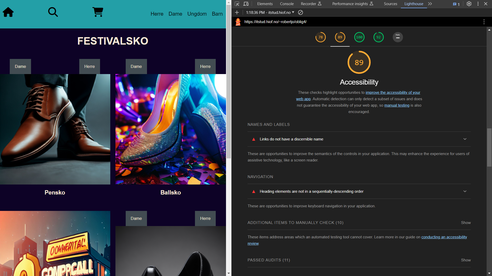
Lighthouse UU resultat av index-siden
Først kan vi se at man kan forbedre ikonene på toppen av "headeren". Det blir foreslått bedre semantikk og info om hva ikonene gjør,
sånn at man også kan få lest opp beskrivelsen av dem med en "screen reader".
Det blir også gjort oppmerksom på at overskrift ikke har blitt brukt i riktig rekkefølge. Ser ut som det kan komme av en h4 overskrift
i "footer"
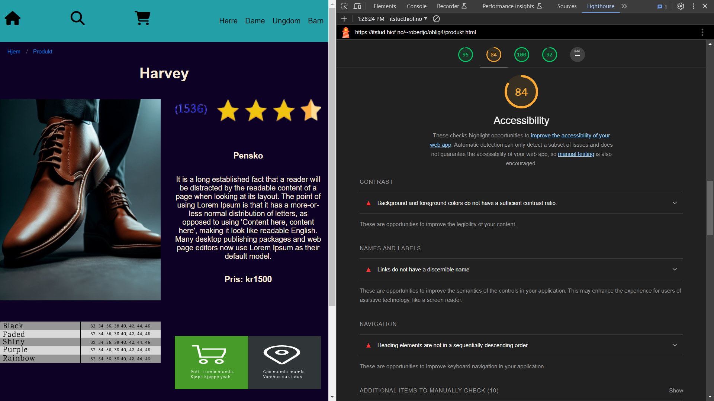
Lighthouse UU resultat av produkt-siden
På produkt siden, kan vi se at de samme feilene dukket opp igjen på footer og header, som er like på alle sidene.
Men det kom også frem at det var litt dårlig kontrast på brødsmulestien og i noe skrift midt på siden, som må gjøres mer leselig med bedre kontrast.
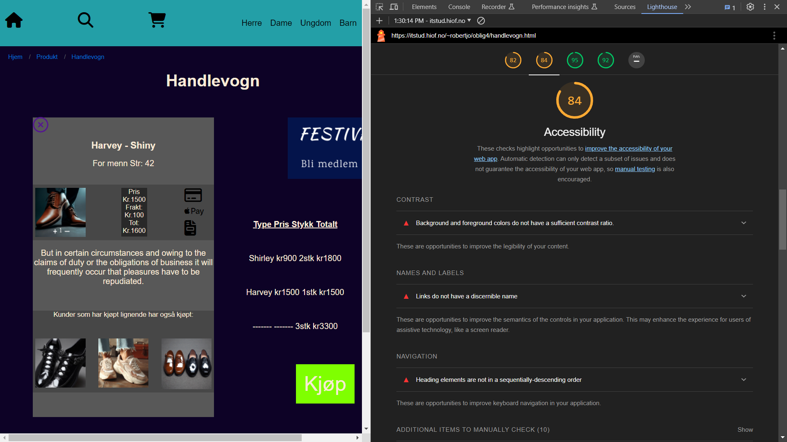
Lighthouse UU resultat av handlevogn-siden
Igjen støter vi på de samme feilene som vi har på de to første sidene. Eneste nytt på denne siden var at det var flere steder som ikke hadde bra nok kontrast.
Lighthouse analyse - SEO:
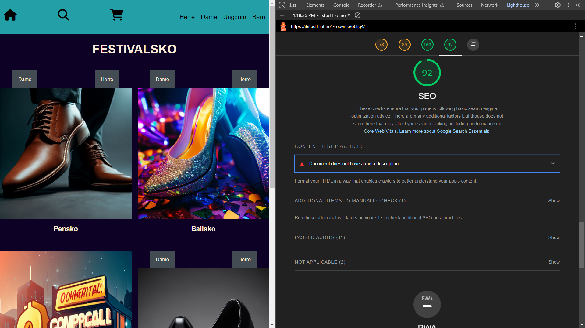
Lighthouse SEO resultat av index-siden
I denne seksjonen av rapporten blir vi bedt om å ha med meta beskrivelse av html koden, slik at "crawlere" fra søkemotorer kan se hva som er på siden.
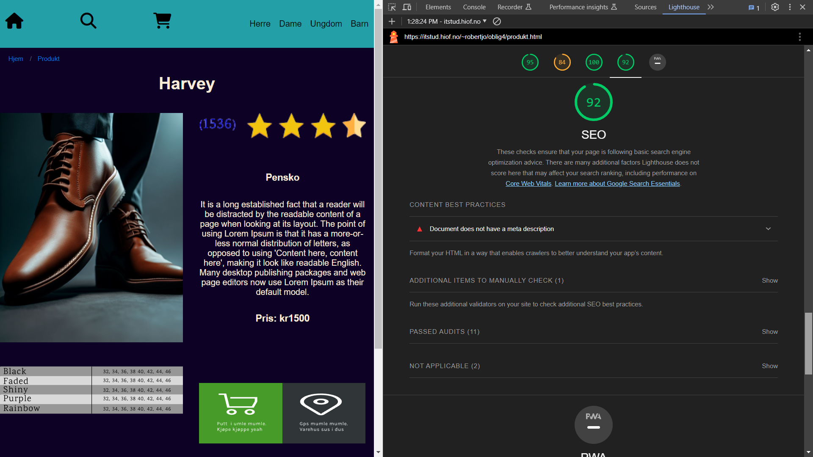
Lighthouse SEO resultat av produktside
Denne siden får akkurat samme feilmelding som forside, at den mangler meta data.
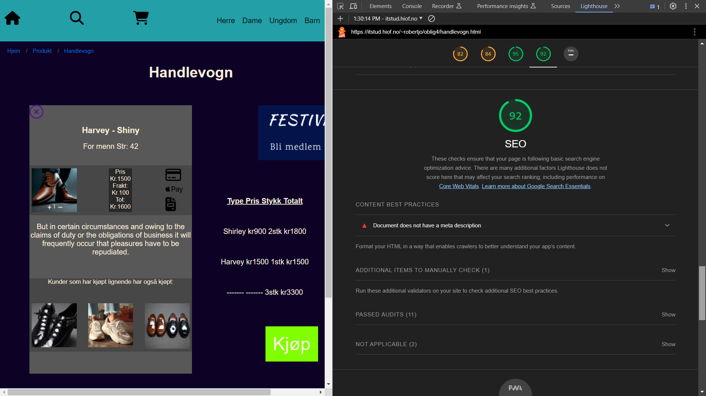
Lighthouse SEO resultat av handlevogn-siden
Alle 3 sidene har fått samme resultat og mangler igjen meta data for å få en bedre score på SEO rapporten.
Webaim analyse:
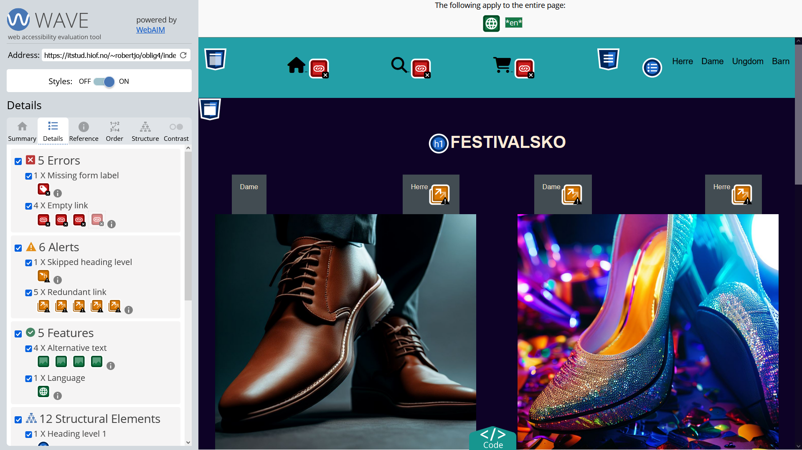
Webaim resultat av index-siden
Her dukker det opp 5 røde feilmeldinger. Dette gjelder linker som ikke fører noe sted eller har noe beskrivelse på seg. Det er også manglende label/form på feltet man kan skrive eposten sin på.
Fikk også beskjed om feil rekkefølge på en av overskriftene og linker som fører til samme sted. Dette var orangsje meldinger.
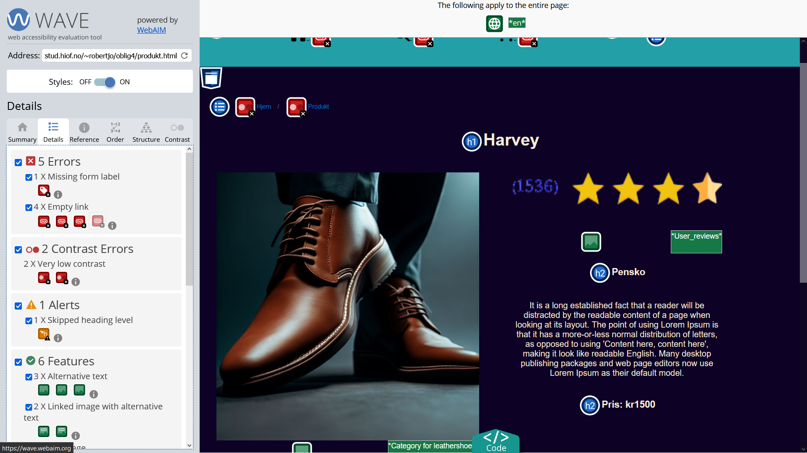
Webaim resultat av produktside
Her får vi opp de samme feilene som var på index-siden, siden fleste parten av feilene er i header og footer. Får også noen ekstra røde meldinger som sier at det er for dårlig kontrast.
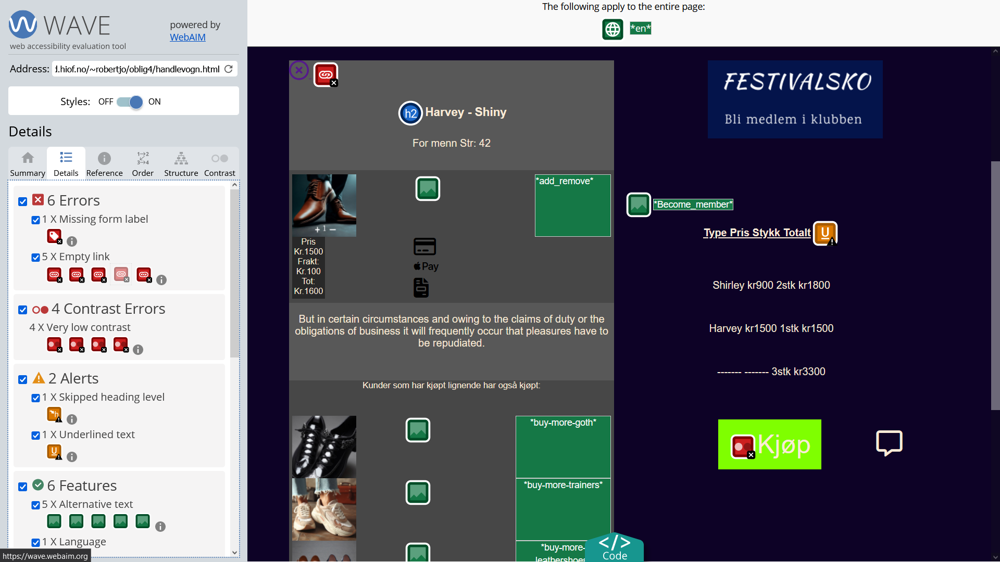
Webaim resultat av handlevogn-siden
Igjen dukker de samme feilene opp, men vi får i tillegg opp noen ekstra kontrast feilmeldinger.
AI analyse av SEO og UU:
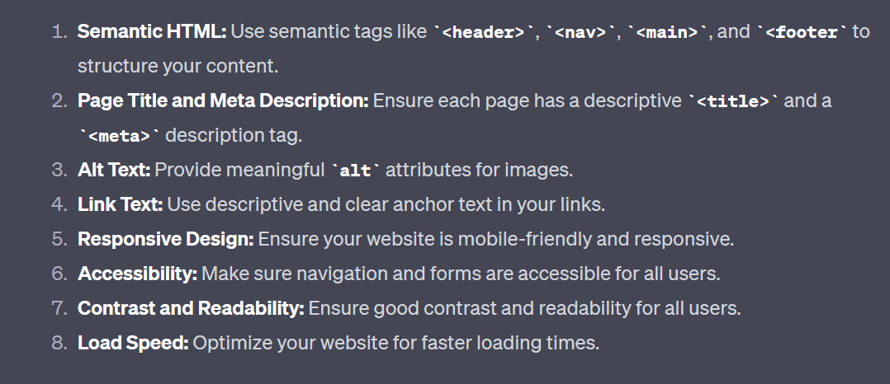
Chat GPT rapport av index-siden
Ai har i sin rapport beskrevet litt av de samme problemene som vi ser i tidligere analyser.
Semantiske tagger, god title og god meta data er noe som helt klart må forbedres, i følge ai.
Alt tekst for bilder og god beskrivelse på linker blir også tatt opp. Det blir nevnt at responivt
design kan fobedres og navigeringen kan bli bedre, slik at alle brukere kan bruke siden på forskjellige måter.Med keyboard og oppleser osv)
Kontrast blir nevnt og at man burde å forbedre tiden det tar å laste siden/elementer på siden.
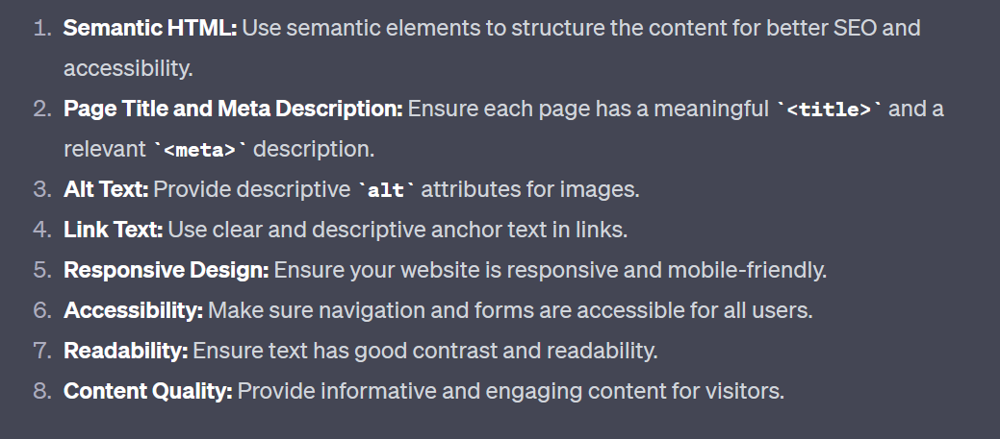
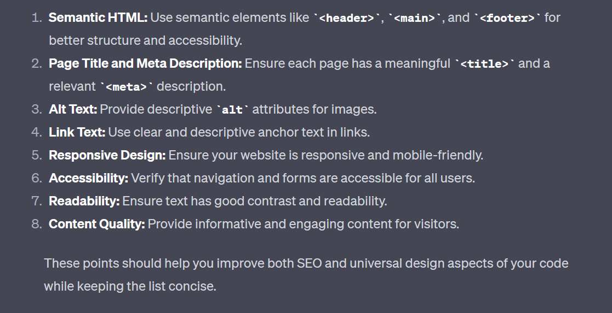
Chat GPT rapport av produktsiden og handlevogn-siden
Ai rapporten av produktsiden og handlevognen ble omtrent identisk med rapporten av index-siden over.
| Lighthouse |
Webaim |
Chat GPT |
| SEO |
SEO |
SEO |
| Ha med meta beskrivelse for crawlere og bedre beskrivelse av siden |
Feil rekkefølge på overskrifter. Flere linker fører til samme sted |
Ha bedre meta data og semantiske tagger. Bruk av title kan bli bedre. |
| UU |
UU |
UU |
| Gi ikoner i header bedre info om hva de gjør og bedre semantikk. Må ta bedre hensyn til en screenreader. Får også beskjed om å fikse rekkefølge på overskrifter. Fikse kontrast på brødsmulesti og andre elementer. |
Fikse ikoner, gi bedre info eller ha link som fører noe sted. Mangler label på skrivefelt i footer. Nevner dårlig kontrast. |
Kan ha bedre alt tekst til bilder og bedre beskrivelse av linker. Navigering kan også forbedres, samme som responsiviteten. Sørg for at man kan navigere med keyboard osv. |